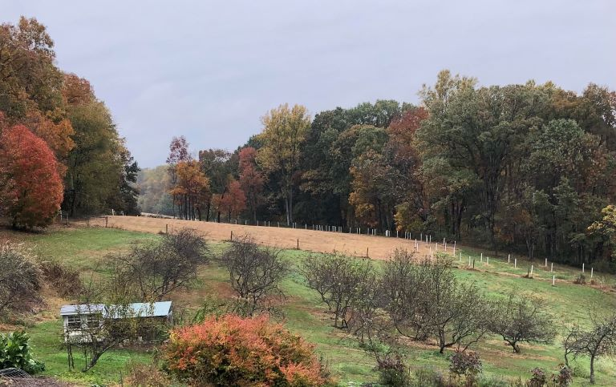
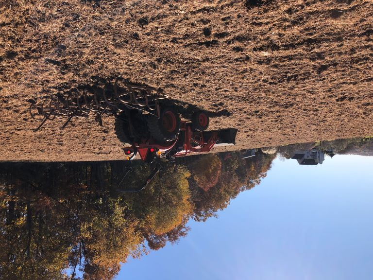
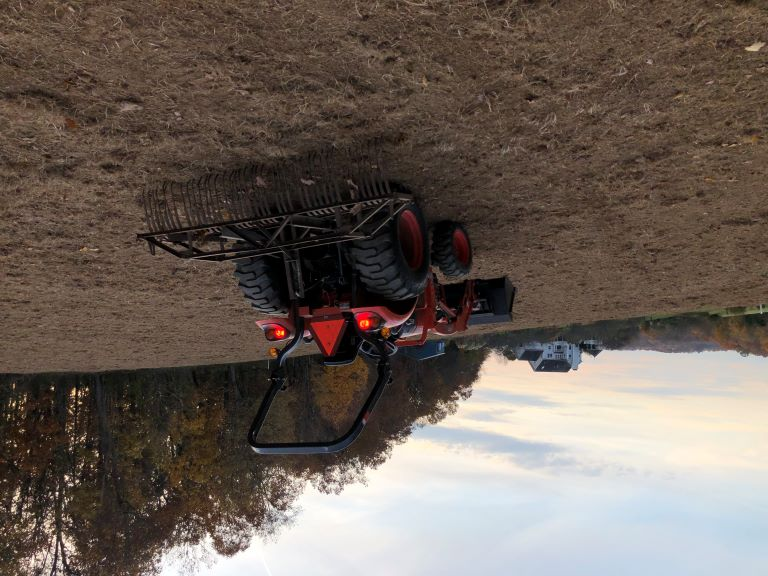
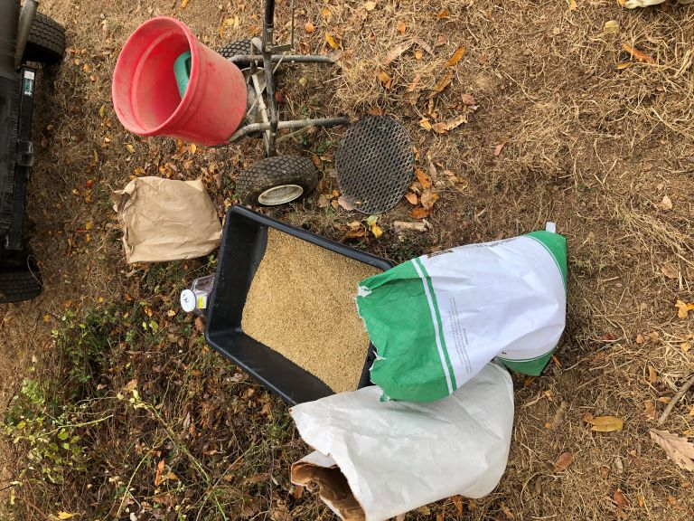

The NRCS offers an Environmental Quality Incentive Program (EQIP) that provides financial and technical assistance to encourage landowners to make changes in their land stewardship to improve water and air quality, enhance wildlife habitat, increase soil health, etc. You can read all about EQIP here.
As a non-industrial forest owner or manager with a Forest Management Plan (FMP), we are eligible to participate in this voluntary conservation program. It provides us with great technical advice and support as well as reimbursement for basic costs of materials such as trees and shrubs, cover crops, and native forbs and flower seed to establish a native wildlife habitat.
We applied to the program in 2020 and were accepted. We worked with our NRCS soil conservationist to produce a soil conservation and water quality plan on the back 2.1 acre field (Fld 3) shown in The Big Picture. We retained total control over what we wanted to do and how it fit into one of the EQIP general goal descriptions, in our case a "pollinator meadow" which supports healthier soil and enhanced wildlife habitat.
Spring of 2021 we removed many invasives from the edges of the field, pushed back the borders and planted 75 trees and shrubs in the border area. The edge invasives were mainly Oriental Bittersweet, an unknown Spirea, and Japanese Stiltgrass. In the field, there was lots of Poison Ivy, Canada Thistle, and Johnson Grass.
During the summer of 2021, the field areas with bad invasive populations was spot sprayed with Glyphosate and kept short with multiple mowings.
Fall of 2021, the entire field was killed with Glyphosate and a cover crop planted for overwintering. The cover crop mix as recommended by our NRCS consultant was 16 pounds Oats, 36 pounds Barley, 2 pounds Canola, and 2 pounds Red Clover per acre.
October 2021, the EQIP pollinator meadow area is ready for planting the fall cover crop. You can see the perimeter tree/shrub plantings in the white tree protector tubes.
These native trees and shrubs were selected for their role in wildlife support, from the tiniest insects to large mammals.
This fast growing species prefers dry upland and we have plenty of that on the ridge. Oaks provides nesting space, cover, and shelter for wildlife. Oaks are host to numerous beneficial insects, which in turn provide food for birds. They are the champion host plant and although estimates of the number of species they support varies widely, it is generally agreed that they support more life forms than any other native North American tree. So plant an oak. Red Oak is a host plant to butterfly and moth larvae (caterpillars), most notably Gray Hairstreak (Strymon melinus), and attracts hummingbirds. The acorns are eaten by woodpeckers, blue jays, small mammals, wild turkeys, white-tailed deer and black bears.
A smaller tree planted in front of the Red Oak, in Spring it bears creamy white flower clusters whose nectar attracts an array of busy pollinators, including bees, beetles and butterflies. It is a host plant for butterfly and moth larvae, including Spring Azure (Celastrina “ladon”), and it provides habitat cover and shelter for wildlife as well as fruit for a wide variety of birds (Eastern bluebirds, Northern cardinals, Northern flickers, and downy woodpeckers) as well as other wildlife.
These lilac-size shrubs are very attractive to pollinators, and their simple, open blossom structure makes them accessible to a range of bee species, from the large bumblebees (Bombus spp.) to tiny sweat bees (Lasioglossum spp.). The berries are very astringent when ripe and are an important late season food source for birds, who tend to leave them alone until late in the fall or even the next spring, when they have fermented and shriveled into wrinkled raisins. My folks (who called them chokecherries) used them to color and flavor apple jelly. When eaten "out of hand" they pucker your mouth but I liked the flavor. The fruits contain higher levels of antioxidants than any other temperate zone fruit, including blueberries.
Fruit eaten by black bear, fox, wood duck, wild turkey, and songbirds. Foliage browsed by White-tailed deer. Flowers are an excellent nectar source for bees. It is a host plant for many inconspicuous insects, which provide food for migrating and resident birds.
Loved by squirrel, fox, coyote, raccoon, opossum, and quail, and of course White-tailed deer, like we need more of those excess invasives in the biome, all things in moderation but we have these in overabundance, eliminating seedlings from the forest which is why the annual harvest "bag limit" is still so high, down from 14/year when I moved here to "only" 10.
As of November 2021, the meadow installation is still a work in progress. We have worked within some limits of tools and access. Typically to accomplish this installation on roughly 2.1 acres, we would need a tow behind or 3 point sprayer and a seed drill. We had various challenges in acquiring this equipment, one of which was our highly capable 35HP 4WD Kioti compact tractor is underpowered for the seed drills readily available to us from NRCS or Pheasants Unlimited. The smallest drills they had were rated for a minimum of 40HP tractors. Understandable, but since we are not ag producers, we were surprised by what large pieces of machinery they are.
For the initial vegetation removal and cover crop planting, we decided to use more manual or old-fashioned methods. We applied the Glyphosate using a high quality backpack sprayer. This was more work than initially estimated. The exercise with 50 pounds of liquid on one's back was fine, the difficulty was in accurately recording the overlap of the spray pattern while walking around the field. A constant pressure valve on your sprayer is necessary to achieve a consistent width of spray. Overwise you face the challenge of a larger/smaller spray pattern width as your pressure increases/decreases from manual pumping.
Once the Glyphosate was laid down on calm days, the next issue was getting the cover crop seed into contact with the ground. A seed drill is the obvious, simplest, and best choice since you'd simply drill the seed in through the existing dead vegetation and be done. Lacking that, we used a three step process of a spring tooth harrow and rock rake to remove the dead vegetation, manual push spreader to seed the cover crop mix, and a final pass with the rock rake to scratch the seed in. The seeding was the simplest and fastest part.
Shallow cultivation with spring tooth harrow
Rock rake. Used to remove dead vegetation and scratch in cover crop.
Seeding. Mixing cover crop and broadcast spreader.
